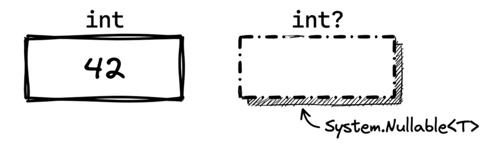
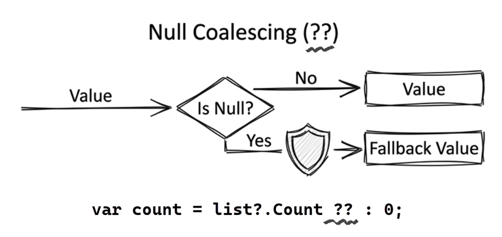
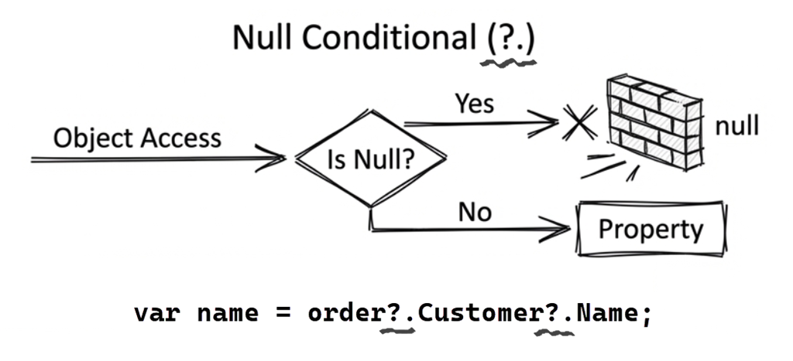
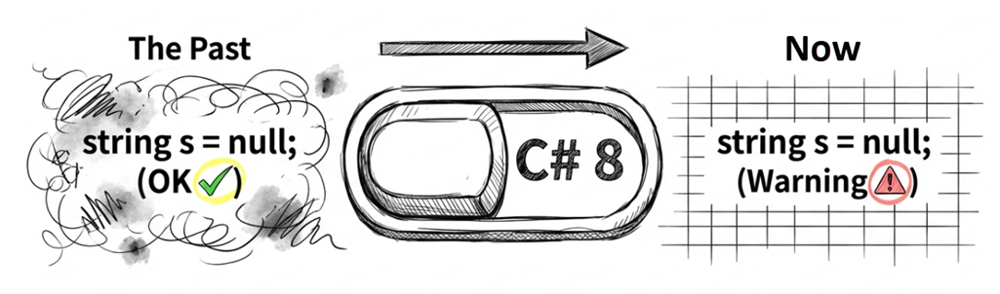
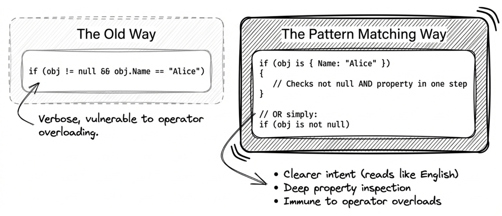

第 3 章：空值安全
Tony Hoare，null 參考的發明者，曾稱其為「十億美元錯誤」（The Billion Dollar Mistake）。這個看似無害的設計決策，在過去數十年中造成許多系統崩潰、安全漏洞，也讓問題排查變得困難。寫程式有時候就像在踩地雷：你永遠不知道哪一行程式碼會因為一個意想不到的 null 而引發 NullReferenceException。
C# 從最初的版本開始，就不斷演進其空值處理機制。從 C# 2.0 的 Nullable Value Types (T?)，到 null 運算子（??、?.），再到 C# 8 的 Nullable Reference Types（簡稱 NRT），每一步都是為了讓「空值」這件事變得更明確、可追蹤、且可由編譯器檢查。
本章會整理現代 C# 的空值安全機制（null safety），協助你降低 NullReferenceException 的發生機會，讓空值處理從「事後排錯」逐漸轉為「事前檢查」。
3.1 為什麼需要空值安全？
在傳統 C# 中，參考型別的變數預設可以是 null：
這種寫法有下列問題：
- 成本高昂：
NullReferenceException長期以來都是 .NET 應用程式中最常見的崩潰原因之一。 - 隱蔽性強：編譯器無法在編譯時期發現這些問題，只能等到執行時才爆發。
- 難以追蹤：在大型專案中，null 可能在呼叫鏈的任何一層出現。
早期的解決方案
在沒有 Nullable<T> 的年代，處理可為空值的資料（例如資料庫欄位）很不直觀，經常用一些神奇數字來代表「沒有資料」。例如：
這些做法不僅容易出錯，也讓程式碼更不易理解和維護。
3.2 可為 Null 的實值型別
C# 2.0 引入了可為 Null 的實值型別（Nullable Value Types），具體來說就是 System.Nullable<T> 泛型，目的是讓實值型別也能表達「無值」的狀態。
你可以把 Nullable<T> 想像成一個禮物盒：
- 盒子裡可能裝著一個整數（有值）。
- 也可能什麼都沒裝（空值，
null）。

語法：簡潔的 T?
雖然你可以寫 Nullable<int>，但 C# 提供了更簡潔的語法糖：
因此，建議優先使用 T? 的簡潔寫法。
賦值與取值
你可以像操作普通變數一樣對 Nullable 變數賦值，但在取值時需要特別留意：
提醒：使用 .Value 前，務必先檢查是否為 null，否則會拋出 InvalidOperationException。
底層結構：Nullable<T>
理解 Nullable<T> 的內部結構有助於掌握它的行為。實際上，Nullable<T> 是一個簡單的泛型結構，內部只有兩個欄位。其原始碼大致如下（有稍微簡化）：
這裡有三個重點：
Nullable<T>需要一點額外的記憶體空間來儲存hasValue旗標，故int?會比int佔用更多空間（就像盒子本身也有重量）。HasValue明確表達「是否有值」的意圖，因此在閱讀程式碼時通常比!= null更直觀。- 當你寫
x = null時，編譯器實際上是將hasValue設為false（把盒子清空）。
判斷是否有值
判斷一個 Nullable 變數是否有值，是日常開發中最頻繁的操作：
兩種寫法都可以，但一般而言，HasValue 的語意比 != null 更直觀、明確。
與非 Nullable 型別的轉換
從一般實值型別轉換為對應的 Nullable 型別是隱含的（安全的），但反過來則需要明確轉換（因為可能失敗）：
採用明確轉換（explicit conversion）的寫法時，等於是告訴編譯器：「我知道我在做什麼」。當然，你也需要對執行時期的錯誤負責。
Nullable 的運算行為
以算術運算為例，只要運算式中有一個運算元是 null，結果就會是 null，實務上常將此特性稱為「null 傳播」。如以下範例所示：
這符合數學上的直覺：既然其中一個變數的值是未知的（null），最終運算結果自然也是未知的。
在 C# 語言規格中，這是在底層透過 lifted operators（提升運算子）來實現的。所謂的「提升」，是指編譯器將原本適用於基礎型別（如 int）的算術運算子，自動擴充出可以處理對應 Nullable 型別（如 int?）的版本。
也因為有這個機制，Nullable 與一般型別也可以直接混合運算：
即使其中一個運算元 n 是一般型別（非 Nullable），整體運算的結果仍然會是 Nullable。如此一來，你在撰寫運算式時就不用手動轉型。
Ask AI
請解釋以下 C# 代碼的執行結果，特別是 null 傳播的行為。然後改寫為避免不必要的 nullable 轉換，並比較效能差異：
另外，在資料處理管線中頻繁使用
Nullable<T>會不會有效能問題？
3.3 Null 運算子：讓 Null 處理更簡潔
為了讓程式碼更簡潔且安全，C# 提供了多種專門針對 null 處理的運算子，包括：
- Null 聯合運算子（
??）：用於提供預設值，避免 null 傳遞。 - Null 聯合指派運算子（
??=）：可簡化延遲初始化與預設值指派的寫法。 - Null 條件運算子（
?.和?[]）：讓你能安全地存取物件成員或索引，即使物件本身為 null 也不會拋出例外。 - Null 條件指派運算子（C# 14）：進一步簡化「只有在物件不為 null 時才賦值」的情境。
Null 聯合運算子（??）
Null 聯合運算子（null-coalescing operator）的符號是兩個連續的問號，即 ??。其語意為：「如果左邊的運算元不是 null，就給我左邊的運算元，否則給我右邊的。」
這就像是備案（Plan B）：如果 A 計畫行不通（是 null），就執行 B 計畫。

範例：
用口語來說，便是：「如果 x 不是 null，給我 x，否則給我 5。」由於這裡的備用值 5 是 int，所以上面第 2 行的結果一定不是 null。其作用等同於：
int y = (x != null) ? x.Value : 5;實用範例：
Null 聯合指派運算子（??=）
C# 8 開始提供 Null 聯合指派運算子（null-coalescing assignment operator），其符號是兩個問號跟著一個等號，即 ??=。意思是：「如果左邊的運算元是 null，就把右邊的運算元指派給左邊的運算元。」
以往類似底下的寫法：
可以簡化成一行：
fontName ??= "新細明體"; // 如果 fontName 為 null，則指派預設值常見應用：延遲初始化（lazy initialization）
範例：
這段程式碼的意思是：只有當 _cache 是 null 的時候，才會執行 LoadFromDatabase() 並將結果指派給它；如果 _cache 已經有值，則直接回傳。這是延遲初始化的常見寫法。
Null 條件運算子（?. 和 ?[]）
Null 條件運算子的符號是 ?. 或 ?[]，前者用於存取物件的方法或屬性時，預先判斷物件本身是否為 null；如果是 null，則傳回 null。後者（?[]）則是搭配索引子（indexer）使用。

先從 ?. 的用法開始。以下範例直接呼叫 obj.ToString()：
如果呼叫端傳入的 obj 參數值為 null，便會發生 NullReferenceException。可改寫如下：
第 3 行的作用等同於：
return (obj == null ? null : obj.ToString());搭配索引子：?[]
如果要安全地存取索引子，可使用 ?[]：
上面範例的意思是：如果呼叫端傳入的 str 參數值為 null，便回傳 null，否則嘗試回傳該字串的第一個字元。
注意： ?[] 只會先幫你檢查接收者是否為 null，不會額外幫你檢查索引是否超出範圍。因此，若 str 是空字串 ""，str?[0] 仍會拋出 IndexOutOfRangeException。如果你想同時把 null 和空字串都視為「沒有字元」，就必須額外檢查字串長度或使用 string.IsNullOrEmpty。
鏈式呼叫（短路行為）
Null 條件運算子搭配串接寫法也是安全的，例如：
這段程式碼有兩個重點：
- 若
obj為 null 便會立即回傳 null，無論右邊串接了多少方法或屬性都無關。因此，也有人以「短路」來形容這種行為。 - 這裡對
ToString()的結果也使用了?.，是因為在啟用 NRT 的專案中，編譯器會把object.ToString()視為可能回傳null。這樣寫可以避免不必要的 null 警告。
在多層物件存取時，?. 可以把每一層的 null 檢查串起來。例如：
int? orderCount = customer?.Orders?.Count;即使 customer 或 Orders 為 null，程式也不會拋出例外，而是回傳 null。
如果不使用 ?.，就必須把每一層檢查展開：
提醒：請注意這些範例中，用來接收結果的變數都是宣告為 nullable（如 int?、char?）。這是必須的，因為回傳的結果有可能是 null。
組合運用
null 聯合運算子也常和 null 條件運算子一起使用：
當呼叫端傳入的 obj 參數為 null，此函式的回傳結果會是 “無”。
注意此範例函式的回傳型別是 string 而不是 string?。這種「接受 nullable 參數，但保證回傳非 null」的模式很實用，因為呼叫端可以放心地使用回傳值，不需要再做 null 檢查。
Note: 只有在啟用 NRT 選項時，編譯器才能區分
string與string?，並提供相應的 null 安全檢查。詳見稍後的 3.4 節。
其他常見組合：
在需要替多層 nullable 值提供預設值時，這種寫法可以把「安全存取」和「預設值」放在同一個運算式中。
Null 條件指派運算子 (C# 14)
C# 14 進一步擴展了 ?. 和 ?[] 運算子的功能，現在它們可以出現在指派運算子的左側。這讓你能夠更簡潔地處理「只有當物件不是 null 時才賦值」的情境。
以往的寫法需要先做 null 檢查：
現在可以直接這樣寫：
// C# 14：null-conditional assignment
customer?.Order = GetCurrentOrder();這行程式碼的意思是：「只有當 customer 不是 null 時，才將 GetCurrentOrder() 的結果指派給 customer.Order。」
重要細節：右側的運算式只有在左側不是 null 時才會被求值。這意味著如果 customer 是 null，GetCurrentOrder() 根本不會被呼叫。
此功能也支援複合指派運算子：
注意： -- 和 ++ 運算子（無論前綴或後綴）都不能與 null 條件指派（null-conditional assignment）一起使用。這是因為 ++ 或 -- 除了會賦予新值，本身還具有回傳結果（遞增前或遞增後的值）的作用。如果 customer 是 null，整個運算式該回傳什麼值（或是 null）在語意上會造成混淆且不易定義，因此這類寫法是不被允許的。
原始碼： DemoNullOperators
3.4 可為 Null 的參考型別
前面討論的 T? 語法主要是針對實值型別，但其實參考型別才是 NullReferenceException 的主要來源。C# 8.0 引入了 Nullable Reference Types（NRT），讓編譯器能夠在編譯時期就發現潛在的 null 參考錯誤。這是現代 C# 最重要的安全特性之一。

啟用 Nullable Context
早期的 .NET 專案為了向後相容，NRT 選項預設是關閉的。從 .NET 6 開始，新的專案範本預設啟用 NRT，但是否啟用仍取決於專案設定。如果要手動啟用或關閉 NRT，可以修改專案檔（.csproj）中的 Nullable 屬性：
或者，也可以透過 pragma 指示詞在特定檔案中啟用（僅作用於該檔案）：
#nullable enable這種檔案層級的控制讓你可以逐步遷移舊專案，而不需要一次性處理所有警告。
核心概念：? 與 ! 標註
啟用 NRT 後，參考型別的語意發生了根本的改變：
注意這裡的 ? 標記：它明確告訴編譯器「這個變數允許為 null」，而沒有 ? 的變數則被視為「不應該為 null」。
Note
若未啟用 NRT，
string預設仍是允許為 null 的（即舊版 C# 的行為）。此時即使你寫了string?，編譯器通常也只會把它當成註記，甚至可能出現像 CS8632 這類提示你「目前 nullable 註記內容未啟用」的警告，而不會依 NRT 的規則完整追蹤與檢查其 nullability。啟用 NRT 後，string才會被視為不可為 null，並以string?明確表示可為 null。這一改變會促使開發者明確面對和處理 null。
Non-nullable Reference Type
對於宣告為「不可為 null」的變數，在目前的 nullability 契約與流程分析結果下，編譯器會將其視為可安全使用：
請注意，這裡的「安全」是指編譯器在目前資訊下不會提出 null 警告，並不代表執行時期絕對不可能遇到 null。若外部 API、舊程式碼或第三方函式庫違反其宣告契約，執行時仍可能出錯。
Nullable Reference Type
相對地，對於宣告為可為 null 的變數，編譯器會發出警告並要求檢查：
要消除警告，你必須先檢查：
編譯器的流程分析
編譯器會執行靜態流程分析來追蹤變數的 null 狀態。它能理解常見的 null 檢查模式：
編譯器也理解 is 模式比對：
更複雜的模式也有支援：
但流程分析有其限制，無法追蹤以下情況：
流程分析（flow analysis）的限制在於：如果沒有額外的 nullable 契約資訊，它通常只會根據目前可見的流程與已知規則來推斷 null 狀態，無法直接「看穿」一般方法的內部實作。
因此，雖然 ValidateName 方法內部會檢查參數是否為 null，並在碰到 null 時拋出例外（第 8 行），編譯器並不知道這點。當它檢查第 4 行時，仍無法判斷程式執行到這裡時 name 到底是不是 null，所以就發出警告了。
這時你可以使用 [NotNull] 特性（attribute）來幫助編譯器理解：
這會「告訴」編譯器：這個方法會確保參數不為 null，這樣編譯器就能理解流程邏輯，不會再發出相關的警告。
Ask AI
我在遷移舊專案時啟用了 Nullable Reference Types，但遇到以下情況，編譯器產生了無法消除的 null 警告。請幫我判斷這些情況下是否應該用
!運算子，或者有更好的重構方式：
- 一個私有欄位在建構式的某個私有方法中初始化，但編譯器追蹤不到。
- 使用 Unit Test 框架的
[SetUp]方法初始化測試物件。- 從外部 DI 容器注入的依賴（dependencies），標記為 required。
在什麼情況下
null!是合理的？什麼情況下應該重構程式碼？
Null-forgiving 運算子（!）
有時候編譯器無法推斷某個值不是 null，但你確定它不會是 null 時，可以使用 ! 來「告訴」編譯器：「我保證這裡不會是 null，別出現警告。」
範例：
上例的重點是：某些舊版 API 或第三方函式庫的簽名可能只寫成 string?，但你根據外部契約、呼叫時機或框架保證，明確知道這次呼叫一定會回傳非 null。這種情況下，! 才有合理的使用空間。
提醒：別因為只想快點讓編譯警告消失而濫用 ! 來「壓警告」。這樣做等於把原本能在編譯時期提醒你的風險，重新推回執行時期。只在你真的確定時才使用 !。

常見使用場景：null-forgiving 運算子在以下情況可以派上用場：
(1) 延遲初始化但編譯器無法追蹤
在這類情況下，null! 雖然可以作為合理的權宜手段，但如果想把「這個欄位一定會在這裡完成初始化」的資訊也清楚告訴編譯器，則可優先考慮使用 [MemberNotNull] attribute。剛才的範例可以改成這樣：
將 [MemberNotNull] 標註在 Initialize 方法上，就是在告訴編譯器：只要這個方法順利跑完，就可以把 _value 視為已初始化，不必再擔心它是 null。
Tip
從 C# 11 開始，若某個公開屬性必須在建立物件時由呼叫端提供，便可考慮改用
required修飾詞（詳見第 4 章）。不過，像這裡示範的是類別內部在建構流程中初始化私有欄位，則不屬於required的主要使用情境。
(2) 使用框架提供的屬性注入（以 Blazor 為例）
有些框架支援屬性注入，但其具體行為取決於框架本身。上例是以 Blazor 元件 為例：執行時框架會替你設定屬性值，但編譯器無法從這段程式碼單獨推斷出來，所以常會看到 = null!; 這種寫法。
在一般應用程式服務中，仍應優先使用建構式注入（constructor injection，也就是透過建構式接收相依物件），通常就不需要靠 null! 來壓制這類警告。
(3) 測試程式碼中的設定
要注意的是，[SetUp] 之類的測試框架機制，通常只保證初始化方法會在測試執行前被呼叫，不保證 CreateTestSubject() 的回傳值一定不是 null。
若 CreateTestSubject 本來就不應該回傳 null，較好的做法通常是把它的回傳型別宣告為非 nullable。只有在你受限於舊程式碼、測試工具或既有 helper 的簽名時，才考慮在這種地方用 ! 明確表達「我知道這次呼叫結果不會是 null」。
Ask AI
提示詞：「以下程式碼的 foreach 陳述式當中使用了 null-forgiving 運算子，是合理且恰當的嗎？為什麼？」
試試這個提示詞後，一個好 AI 回答應該會確認：在這個特定範例中，! 的使用是合理的，並解釋以下重點：
await allTasks引發例外導致程式流程進入catch，通常表示非同步工作出錯，或者被中途取消了。- 不過，這個範例中的
ThrowAsync(...)是刻意設計來拋出例外，重點在於「工作失敗」而不是「取消」。 - 在此前提下，
allTasks.Exception會有值，所以用!告訴編譯器「我確定這裡不是 null」是合理的。
底下是另一個 AI 提示詞，目的是讓你熟悉如何為常見模式撰寫正確的 null 標註：
我在維護一個 utility library，需要為以下常見模式編寫具有正確 null 標註的簽名：
- TryParse 風格的方法（成功時 out 參數不會 null，失敗時無法保證）
- 延遲初始化的屬性（第一次呼叫時才真正建立）
- 條件式初始化的方法（某個條件下才會設定值）
請分別用
[NotNullWhen]、[MaybeNull]、[NotNull]等 attributes 重寫，並解釋為什麼這樣的標註對使用者有幫助。
實戰範例：API 設計
設計 API 時，正確的 Nullable 標註能省去開發者許多猜測的麻煩，只要看一眼方法簽名就知道哪些參數或回傳值可能為 null：
#nullable enable
public class UserService
{
// 回傳值不可為 null
public User GetUser(int id)
{
var user = FindUserInDatabase(id);
return user ?? throw new UserNotFoundException(id);
}
// 回傳值可為 null
public User? FindUser(string email)
{
return FindUserByEmail(email); // 可能找不到
}
// 參數不可為 null
public void UpdateName(User user, string name)
{
// 在目前的 nullable 契約下，編譯器可將 user 和 name 視為非 null
user.Name = name;
}
// 參數可為 null
public void UpdateNickname(User user, string? nickname)
{
user.Nickname = nickname; // nickname 允許是 null
}
}與舊程式碼的相容性
NRT 是編譯時期檢查，並不會影響執行時期的行為。這意味著：
- 現有的程式碼不會因為啟用 NRT 而停止運作。
- 即使有 NRT 編譯警告，專案仍然可以編譯成功並執行（除非你開啟了「將警告視為錯誤」選項，稍後就會介紹）。
- 你可以逐步導入 NRT，而不需要一次改完整個專案。
建議做法：
- 新專案採用預設值，也就是在專案層級啟用 NRT。
- 舊專案先在個別檔案中啟用
#nullable enable，逐步遷移。
分離「標註」與「警告」 Context（進階）
啟用 #nullable enable 實際上做了兩件事：
- 啟用標註 context (annotation context)：讓編譯器將所有參考型別視為非 nullable，除非加上
?。 - 啟用警告 context (warning context)：讓編譯器產生 null 安全警告。
你可以分別控制這兩個 context。例如，只在某個 C# 檔案啟用其中一個：
#nullable enable annotations // 只啟用標註，不產生警告或者：
#nullable enable warnings // 只啟用警告，不改變標註行為當然，你也可以在同一個檔案中同時使用兩者（等同於 #nullable enable）：
在專案檔中同樣可以選擇性啟用：
實務應用：在遷移大型舊專案時，可以先只啟用 annotation context：
這樣一來，其他啟用 NRT 的專案在使用你的 API 時，就能先受益於清楚的 nullability 契約；你自己的專案內部則可以逐步處理 null 警告，不需要一次全部修正。
將 Null 警告視為錯誤
對於新專案，建議將 null 警告提升為錯誤，確保程式碼的 null 安全性：
常見的 null 相關警告代碼：
- CS8600: 將 null 字面值或可能的 null 值轉換為不可為 null 的型別
- CS8602: 可能的 null 參考的取值
- CS8603: 可能傳回 null 參考
Ask AI
解決此 .NET 專案的所有 CS86xx 系列警告。此專案是從比較老舊的 .NET 升級上來，而且一直沒有啟用 NRT。請先根據程式碼的實際意圖判斷：只有在
null真的是合法值時，才把型別標成 nullable（T?）；若某個值本來就不應該是 null，則優先透過調整初始化流程、補上防衛子句（guard clauses）、加入適當的 nullability attributes，或重構程式碼來消除警告。只有在你有充分理由確定編譯器判斷不出來時，才使用最後手段：以!來壓警告。請在每修改完一個 .cs 檔案之後暫停。我會 review 你的修改，並重新建置專案來查看編譯警告的數量是否減少。等我告訴你繼續時才處理下一個檔案。
3.5 模式比對與 Null
模式比對（pattern matching） 是 C# 的重要功能，完整討論請參考第六章〈模式比對〉。本節專注於模式比對在 null 檢查方面的應用。

is null 與 is not null
使用模式比對（pattern matching）進行 null 檢查，比傳統的 == null 更簡潔、更明確且更安全：
其中，
is null從 C# 7.0 起即可使用；is not null則是 C# 9.0 隨著notpattern 一起加入。
這裡偏好 is 寫法，主要有兩個原因：
- 語意更清晰（讀起來像英文）
- 不會受到多載（overload）
==運算子的影響（更安全）
Switch 運算式與 Null
本節使用 switch 運算式（expression）語法。如果你對此語法不熟悉，可以先參考第六章〈模式比對〉，或直接透過下面的範例了解基本用法。
Switch 運算式讓 null 檢查與其他條件判斷更加流暢：
這種寫法將 null 處理融入整個分支邏輯中，避免了額外的 if 檢查，讓程式碼更精簡。
Property Pattern 與 Null
Property pattern 可以把 null 檢查與屬性條件集中在同一個模式中：
這種寫法自動處理了多層 null 檢查，無需手動 ?. 串接。編譯器會確保只有在所有中間物件都不是 null 時，才會進入 if 區塊。
Ask AI: 比較各種 Null 檢查寫法
參考以下提示詞，讓 AI 解釋各種寫法在可讀性和效能方面的差異。
以下程式碼有三種寫法，請幫我比較它們在可讀性、效能和 null 安全性上的差異：
// 1. 傳統 if/else if (customer != null && customer.Orders != null && customer.Orders.Count > 0) { ProcessVipOrder(customer); } // 2. Null 條件運算子 + null 聯合 if (customer?.Orders?.Count is > 0) { ProcessVipOrder(customer); } // 3. Property Pattern if (customer is { Orders.Count: > 0 }) { ProcessVipOrder(customer); }在大規模應用中，複雜的 property patterns 會影響效能嗎？
3.6 最佳實務
本節整理一些最佳實務，這些原則能幫助你寫出更安全、更容易維護的程式碼。
1. 優先使用明確的型別標註
2. 盡早檢查，減少 null 擴散
// ✗ null 一路傳遞
public void ProcessOrder(Order? order)
{
var items = order?.Items; // items 可能為 null
var count = items?.Count; // count 可能為 null
// ...整個函式都在處理 null
}
// ✓ 提早離開（Guard Clause）
public void ProcessOrder(Order? order)
{
if (order is null) return;
// 以下程式碼都能假設 order 不是 null
var items = order.Items;
var count = items.Count;
}這樣的「防衛子句」讓函式主體保持簡潔，也讓維護者一眼看出哪些前置條件必須成立。
3. 使用 nullability attributes（進階）
對於無法只靠 NRT 標註完整表達的情況，可以使用這些特性（attributes）來提供額外資訊，例如 [NotNull]、[MaybeNull]、[NotNullWhen] 等：
使用 [NotNullWhen(true)] 特性後，編譯器就能了解：當方法回傳 true 時，out 參數絕對不會是 null。
4. 善用現代語法組合
將 null 條件運算子、null 聯合運算子和 pattern matching 組合使用，可以寫出既簡潔又安全的程式碼：
這行程式碼同時處理了多層 null 檢查和預設值邏輯。若覺得邏輯密度太高、不易理解，可以請 AI 解釋這段程式碼的作用；如果覺得不方便除錯，也可以拆成兩段：
AI 協作：檢測 Null 風險
維護舊專案時，可以嘗試讓 AI 幫你找出潛在的 null 風險。
Prompt
請分析此專案的程式碼，找出潛在的
NullReferenceException風險。建議使用現代 C# 的模式比對或 null 條件運算子來加入防衛子句（guard clauses），並啟用 Nullable Reference Types。
本章重點回顧
- Nullable Value Types (
T?)：讓實值型別也能表達「無值」。 - Null 運算子（
??、??=、?.、?[]）：簡化 null 處理邏輯，讓程式碼更簡潔安全。C# 14 更進一步支援 null 條件指派。 - Nullable Reference Types（C# 8+）：編譯時期就能發現 null 參考錯誤，這是現代 C# 的核心安全特性。
- Pattern Matching：
is null、is not null、switch expression 提供更清晰的 null 檢查方式。 - 最佳實務：明確標註、提早檢查、善用現代語法，讓
NullReferenceException從你的程式碼中消失。
下一章，我們將把目光轉向不可變設計，探討 record 型別、init 存取子，以及讓類別設計更嚴謹的現代語法。
本章術語
| 英文 | 中文 | 說明 |
|---|---|---|
| Guard clause | 防衛子句 | 在函式開頭提早檢查並離開，避免 null 擴散 |
| Null | 空值；空參考 | 表示「無值」或「不存在」的特殊值 |
| Null coalescing assignment operator | Null 聯合指派運算子 | ??=，當變數為 null 時才賦值 |
| Null coalescing operator | Null 聯合運算子 | ??，提供 null 時的預設值 |
| Null conditional operator | Null 條件運算子 | ?. 和 ?[]，安全地存取可能為 null 的物件 |
| Null-forgiving operator | Null 寬容運算子 | !，告訴編譯器「我確定這裡不是 null」 |
| Nullable reference type (NRT) | 可為 null 的參考型別 | C# 8+ 特性，讓編譯器檢查參考型別的 null 安全性 |
| Nullable value type | 可為 null 的實值型別 | 透過 T? 語法，讓實值型別也能表達 null |
| NullReferenceException | Null 參考例外 | 當存取 null 物件的成員時拋出的例外 |
| Pattern matching | 模式比對 | 現代 C# 的語法特性，可用於 null 檢查 |